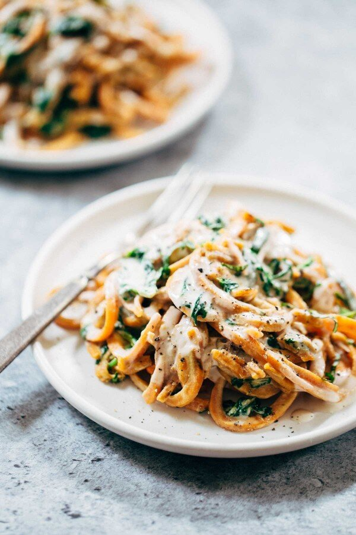

All Eyes On...[5]

all eyes on
It's been a while since I've posted recipes I've got my eyes on! But, fear not! I have been collecting dreamy recipes. Enjoy!
this recipe for creamy spinach sweet potato noodles with cashew sauce. my jaw just fell off.
these coffee cardamom bliss balls. but like...whoa.
this braided vegan egg bread. this could get dangerous.
this vegan butter chicken. chickpeas own my heart.
these 5-ingredient dark chocolate matcha cups. yooooo.
these pulled bbq carrots. wtf.
this coconut milk ice cream with a chestnut swirl. exotic!
these vegan whole wheat chocolate cinnamon rolls with pistachios & orange icing. say what?
these halva spelt brownies. yes
this rainbow power salad with roasted chickpeas. rainbow powaaaaaa.
this simple quinoa black bean stew. i likey simple.
these vegan carrot cake waffles. the crisp!
these whole wheat peanut butter blondies. im in lust.
these vegan basil ricotta pinwheels. you got me at basil ricotta.
[ this is everything I currently have my eyes on. leave any links you’re currently loving, below! ]